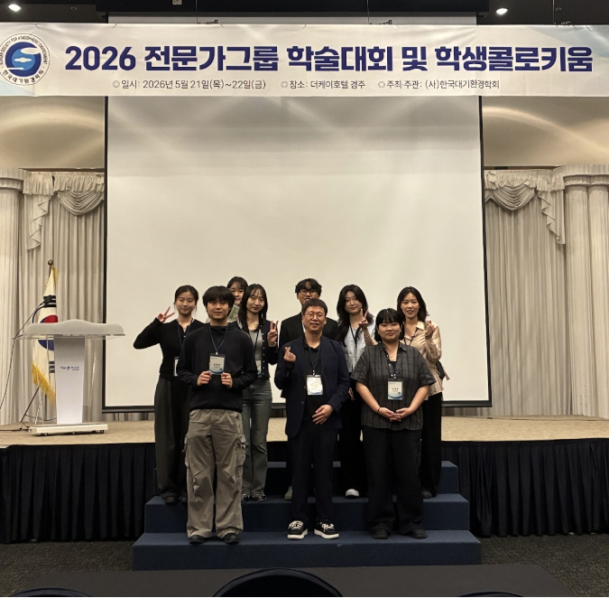
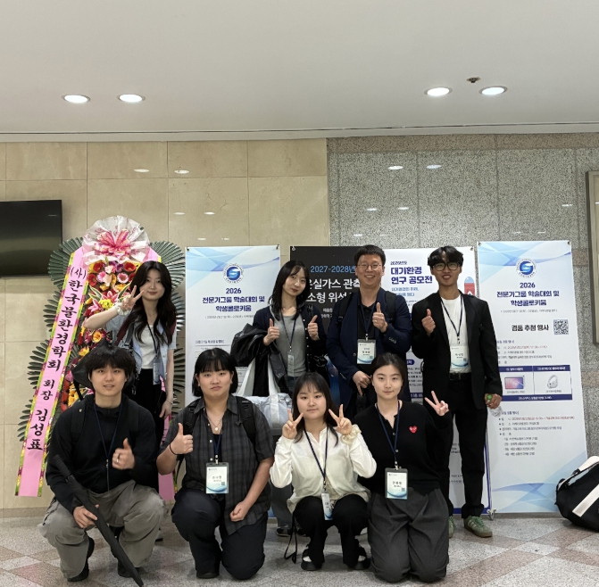

01 / Selective Oxidation
H₂S → S
황화수소 선택산화
악취·부식의 원인인 황화수소를 완전 연소 대신 황(S)으로 선택 산화시켜 자원으로 회수하며 처리합니다.
담당 · 사공누리 석사과정
맑은공기재현실험실은 충남대학교 환경공학과 양재환 교수가 이끄는 환경 촉매 연구실입니다. 산업과 생활 환경에서 발생하는 유해가스를 촉매 반응으로 분해·전환하여 대기질을 개선하는 것을 목표로 합니다.
우리 연구의 대표 플랫폼은 폐 PET 플라스틱의 업사이클링입니다. 버려지는 플라스틱을 고성능 활성탄 촉매로 재탄생시켜, 폐기물과 대기오염 문제를 동시에 해결합니다. 한국원자력연구원(KAERI)에서 쌓은 방사성 기체 처리 경험을 바탕으로 원자력 분야 응용 연구도 함께 수행합니다.


악취·부식의 원인인 황화수소를 완전 연소 대신 황(S)으로 선택 산화시켜 자원으로 회수하며 처리합니다.
대표 휘발성유기화합물 톨루엔을 저온에서 완전 분해하는 촉매를 개발하여 산업 배가스의 VOC를 제거합니다.
원자력 시설의 방사성 요오드 포집에 쓰이는 TEDA의 촉매 산화 처리를 연구합니다. 한수원(KHNP) K-Cloud 과제로 수행됩니다.
폐 PET를 KOH 활성화로 다공성 탄소 소재로 전환하여 흡착·촉매 기능을 부여하는, 전 연구의 공통 소재 기반입니다.